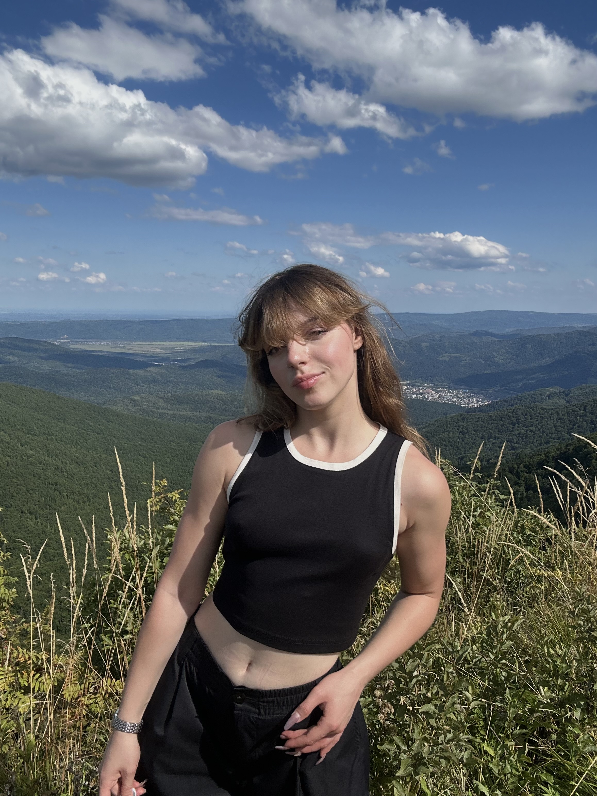
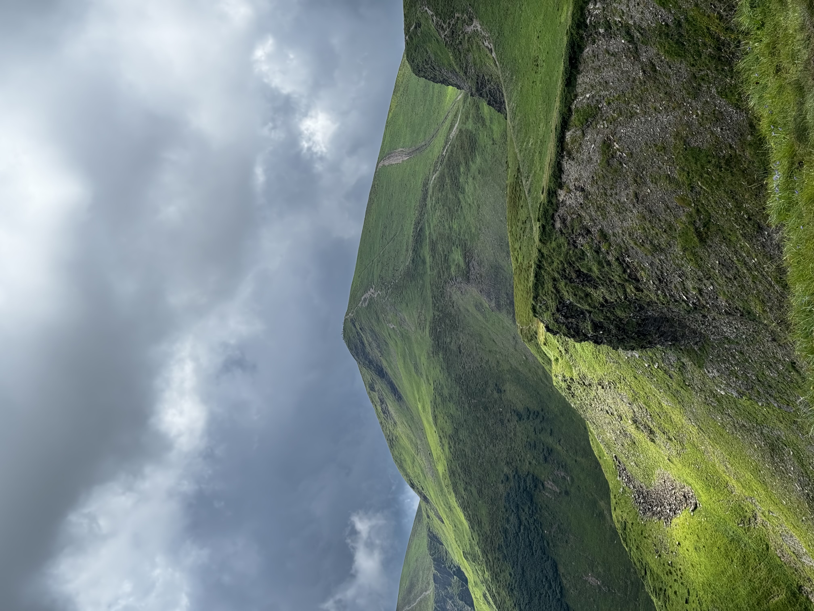
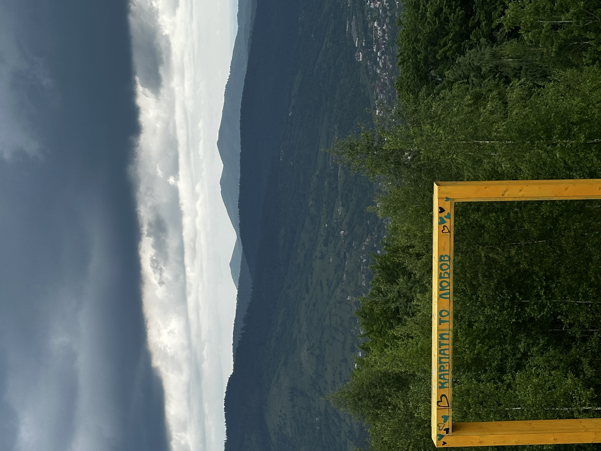
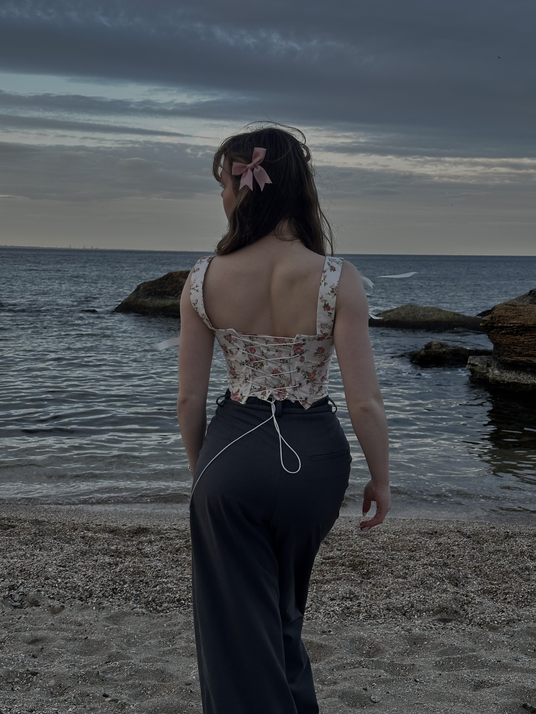
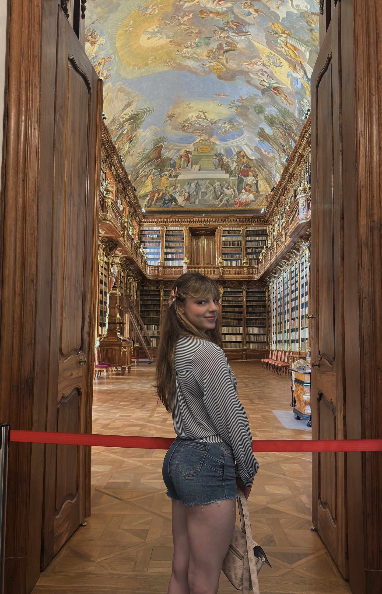
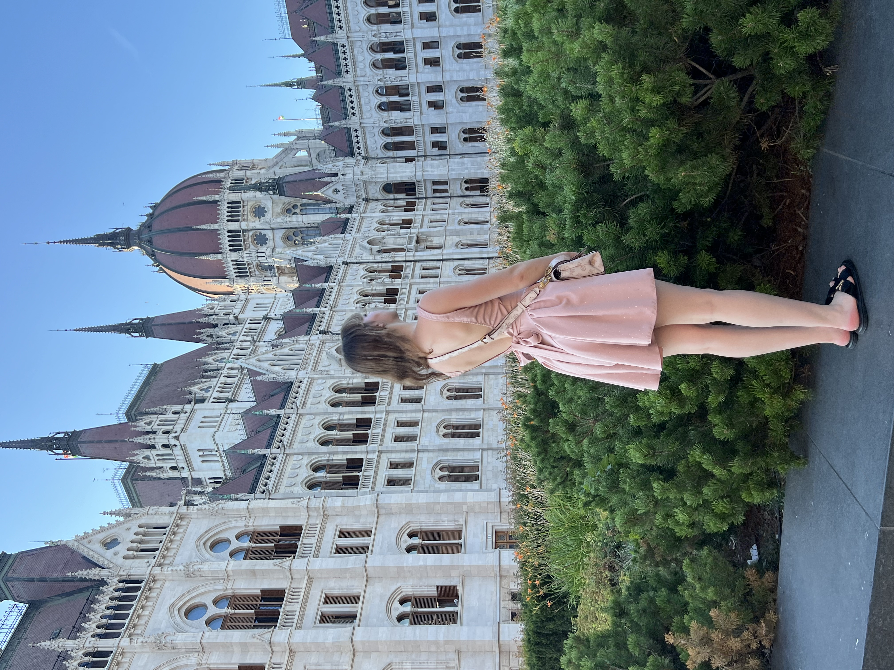

Архів експедицій
Подорожі та місця
13 відвіданих країн · гірські хребти · міські лабіринти
Кожна подорож — це зміна системи координат. Від скельних сходжень і засніжених карпатських вершин до старовинних бруківок європейських міст, де геометрія будівель вивчається крізь об'єктив камери.
Карпати та гори



Міста та атмосфера



Географія мандрівок
| Локація / Країна | Формат і спогади | Час |
|---|---|---|
| Вінниця, Україна | Рідне місто, зустрічі з родиною та близькими | Постійно |
| Львів, Україна | Місто навчання, студентське життя та натхнення | Постійно |
| Варшава, Польща | Новорічні свята, зустріч із випускниками ліцею | |
| Київ, Україна | Зимові прогулянки, душевна зустріч із друзями | |
| Івано-Франківськ, Україна | Перша поїздка, знайомство із затишним містом | |
| Ужгород, Україна | Весняне цвітіння сакур, атмосферні вулички | |
| Одеса, Україна | Спонтанна мандрівка до моря, перше знайомство | |
| Карпати (Яремче), Україна | Хайкінг, походи та сходження на гірські вершини | |
| Прага, Чехія | Зустріч із татом, затишок рідного європейського дому | |
| Дрезден, Німеччина | Самостійна подорож, барокова культура та музеї | |
| Будапешт, Угорщина | Казкова панорама Дунаю, вечірні вогні парламенту |